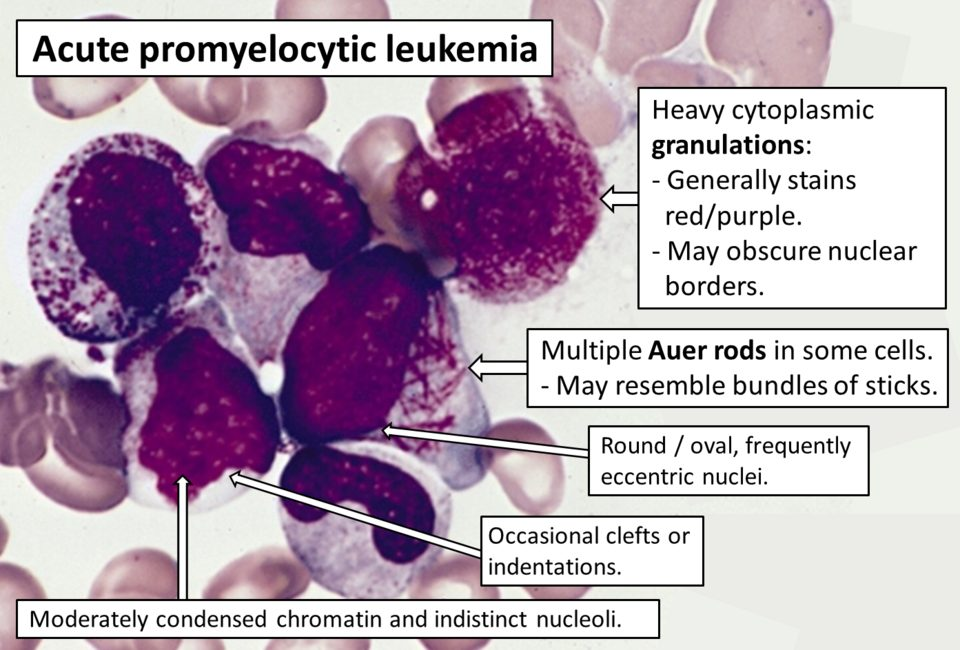

General information only. It does not replace advice from your care team and should not be used to choose a treatment.


At a glance
| How common | 5-10% of acute myeloid leukaemias |
| Alteration | t(15;17) translocation, PML-RARA fusion |
| Early danger | Severe bleeding from clotting disturbance |
| Treatment | All-trans retinoic acid (ATRA) and arsenic trioxide |
| Cure | Over 90% once the initial phase is survived |
Why it is special
The abnormal PML-RARA protein blocks cell maturation. All-trans retinoic acid (a vitamin A derivative) and arsenic break it down and force the leukaemia cells to mature. It is a classic example of targeted therapy and of collaboration between Chinese medicine (where arsenic was first used) and Western medicine.
A medical emergency
At diagnosis, clotting is severely disturbed and can cause brain or lung haemorrhage. When suspected, ATRA is started at once, without waiting for genetic confirmation, and platelets and plasma are transfused.
Treatment
- ATRA + arsenic trioxide for a few months, without chemotherapy, for standard risk (APL0406 trial).
- In high risk (white cells > 10,000), some chemotherapy or gemtuzumab is added.
- Watch for differentiation syndrome (fever, breathing difficulty, fluid retention), treated with dexamethasone.
See also: Acute myeloid leukaemia, Leukaemias, Targeted therapy.
History · Medicapedia
Acute promyelocytic leukaemia in the history of medicine
How it was discovered, who studied it and how its treatment changed over the centuries, told on Medicapedia, our sister site on the history of medicine.
Read the history on Medicapedia ↗Sources
- Lo-Coco F, et al. Retinoic acid and arsenic trioxide for acute promyelocytic leukemia (APL0406). N Engl J Med. 2013;369:111-121. doi:10.1056/NEJMoa1300874
- Sanz MA, et al. Management of acute promyelocytic leukemia: updated recommendations from an expert panel of the European LeukemiaNet. Blood. 2019;133:1630-1643. doi:10.1182/blood-2019-01-894980